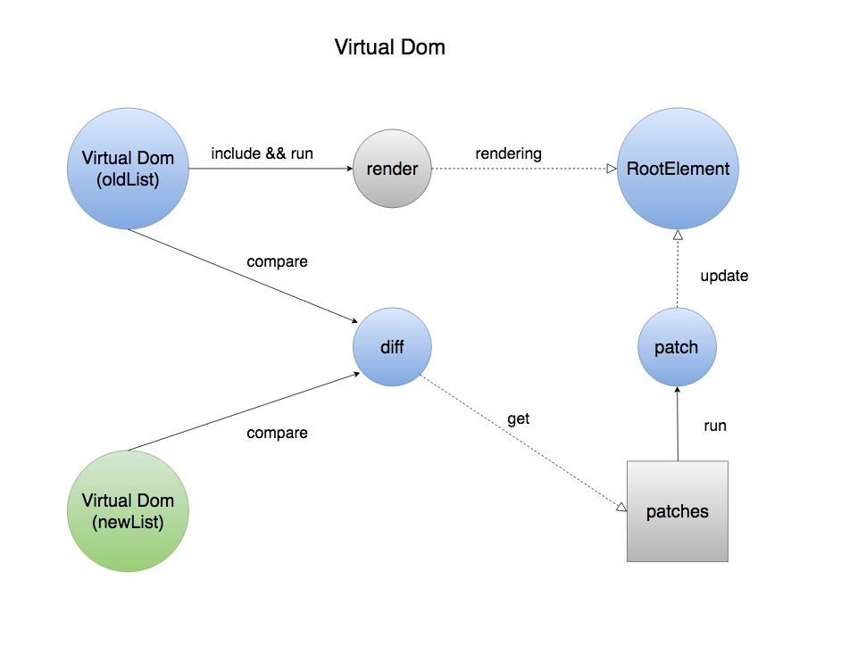

React 学习
文档： https://reactjs.org/docs/typechecking-with-proptypes.html
react 基础 基本概念
React.createElement
创建一个react元素
// 创建一个element元素
const element = React.createElement(
'h1',
{className: 'greeting'},
'Hello, world!'
);
// 生成的元素为
{
type: 'h1',
props: {
className: 'greeting',
children: 'Hello, world'
}
}
jsx语法作为语法糖也会转为 React.createElement 来创建元素。
ReactDOM.render
把一个dom元素作为根元素， 渲染react组件
ReactDOM.render(
element,
container,
[callback]
)
props
props作为组件的参数传递到组件中， 可以在组件内获取该属性
props
state
this.setState({
name: '令狐冲'
})
this.setState((preState, Props) => ({
value: preState.value++
}))
- 在constructor中初始化state, 可以直接给this.state赋值
- 其它的生命周期中或方法中不可以直接修改state， 需要用this.setState({name: '修改后的名字'})来修改
- state是异步一次性更新的。 react会把该组件的所有的state的改变组合一次性完成更新
lifting state up 提取公共state
如果几个组件会被相同的state影响， 可以提取该state到他们共同的父组件中
各子组件通过props获取父组件的state状态并渲染
Compositon vs Inheritance
propTypes 类型检查
react内置的类型检查方法
各种验证类型
import PropTypes from 'prop-types';
import React from 'react'
/**
* prop-types 类型检查。
* 类型不符合会在控制台提示
*/
class PropTypeComp extends React.Component{
render () {
return (<div>
<p>类型检查 PropTypes</p>
<p>{this.props.content}</p>
<p>{this.props.bool}</p>
</div>)
}
}
console.log('PropTypes：', PropTypes)
PropTypeComp.propTypes = {
// You can declare that a prop is a specific JS primitive. By default, these
// are all optional.
optionalArray: PropTypes.array,
optionalBool: PropTypes.bool,
optionalFunc: PropTypes.func,
optionalNumber: PropTypes.number,
optionalObject: PropTypes.object,
optionalString: PropTypes.string,
optionalSymbol: PropTypes.symbol,
// Anything that can be rendered: numbers, strings, elements or an array
// (or fragment) containing these types.
optionalNode: PropTypes.node,
// A React element.
optionalElement: PropTypes.element,
// You can also declare that a prop is an instance of a class. This uses
// JS's instanceof operator.
optionalMessage: PropTypes.instanceOf(Message),
// You can ensure that your prop is limited to specific values by treating
// it as an enum.
optionalEnum: PropTypes.oneOf(['News', 'Photos']),
// An object that could be one of many types
optionalUnion: PropTypes.oneOfType([
PropTypes.string,
PropTypes.number,
PropTypes.instanceOf(Message)
]),
// An array of a certain type
optionalArrayOf: PropTypes.arrayOf(PropTypes.number),
// An object with property values of a certain type
optionalObjectOf: PropTypes.objectOf(PropTypes.number),
// An object taking on a particular shape
optionalObjectWithShape: PropTypes.shape({
color: PropTypes.string,
fontSize: PropTypes.number
}),
// You can chain any of the above with `isRequired` to make sure a warning
// is shown if the prop isn't provided.
requiredFunc: PropTypes.func.isRequired,
// A value of any data type
requiredAny: PropTypes.any.isRequired,
// You can also specify a custom validator. It should return an Error object if the validation fails. Don't `console.warn` or throw, as this won't work inside `oneOfType`.
customProp: function(props, propName, componentName) {
if (!/matchme/.test(props[propName])) {
return new Error(
'Invalid prop `' + propName + '` supplied to' +
' `' + componentName + '`. Validation failed.'
);
}
},
// You can also supply a custom validator to `arrayOf` and `objectOf`.
// It should return an Error object if the validation fails. The validator
// will be called for each key in the array or object. The first two
// arguments of the validator are the array or object itself, and the
// current item's key.
customArrayProp: PropTypes.arrayOf(function(propValue, key, componentName, location, propFullName) {
if (!/matchme/.test(propValue[key])) {
return new Error(
'Invalid prop `' + propFullName + '` supplied to' +
' `' + componentName + '`. Validation failed.'
);
}
})
}
export default PropTypeComp;
设置默认值
class PropTypeComp extends React.Component{
render () {
return (
<div>
<p>设置默认: {this.props.defaultVal}</p>
</div>
)
}
}
PropTypeComp.defaultProps = {
defaultVal: '我是默认值'
}
PropTypeComp.propTypes = {
defaultVal: PropTypes.string
}
export default PropTypeComp;
Refs and the DOM
在典型的REACT数据流中, 组件通过props与父组件相互作用, 也只有父组件能通过Props更改子组件. 但有时候需要在其他位置修改某个组件或元素. 为满足这些场景, REACT提供了一个ref属性可以获取到该组件, 并调用其中的方法
Life cycle 生命周期
Mounting阶段
- constructor()
- componentWillMount()
- render()
- componentDidMount()
Update阶段
- componentWillRecieveProps(nextProps): 当组件的属性改变时会触发该方法. 在初始化mounting时不会触发, 如果父组件re-render,即使props没有改变也会触发该方法.
- shouldComponentUpdate(nextProps, nextState): return Boolean. 默认返回true, 返回false会阻止该次渲染, 但是不会阻止子组件的渲染. 初始化渲染或调用forceUpdate时不会触发该方法.
- componentWillUpdate(nextProps, nextState)
- render()
- componentDidUpdate(prevProps, prevState)
UnMounting阶段
- componentWillUnmount()
Error Handling
- componentDidCatch() 可以捕获render或其他生命周期中暴露的错误.
强制使组件redender
this.setState(this.state)
// 或者
this.forceUpdate()
虚拟 dom 更新的 diff 算法
参考
- https://yq.aliyun.com/articles/610195
- https://holmeshe.me/understanding-react-js-source-code-virtual-dom-diff-IX/#The-old-amp-new-virtual-DOM-tree
- 如何实现一个 Virtual DOM 算法
虚拟 dom 更新时, 会对比新旧两个树的差异, 通过 diff 得到一个 patches, 执行 patch更新真实dom

diff 过程
- 遍历新旧2颗树, 采用深度优先算法O(n), 遍历每个节点进行同级元素比较, 记录节点的变化类型.
- 变化类型有4种:
- 标签名变更,则replace.
- 属性变更;
- text 内容变更.
- 元素顺序变化发生的重排.
- 如果是顺序变化则使用 list diff 算法记录变化情况.
- 变化类型有4种:
- diff 之后得到 patches: 保存了每个节点需要做的变化.
- 执行 patch 操作, 更新真实 dom
list diff
采用动态规划算法获取最小编辑距离的算法, 复杂度为 O(max(m * n)) 如果节点被 remove 掉了, 则执行 list diff.